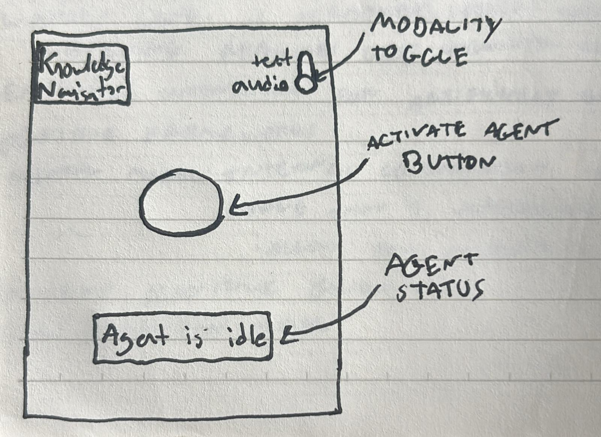
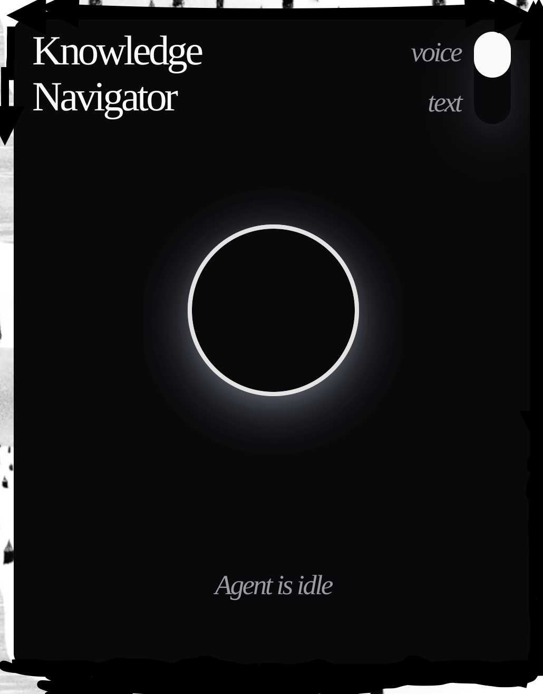

College students of today hold a plethora of responsibilities and commitments. Balancing coursework, internships, jobs, extracurriculars, and career preparation – to name a few – presents a need for an efficient and effective way to organize information. When students do not have a way to do so, deadlines are missed, classes are skipped, learning diminishes, and grades fall. The consequences of this issue extend beyond the classroom, as an overwhelming workload and a lack of a work-life balance can lead to poor mental health in students.
Knowledge Navigator is an application that helps students manage their time and tasks with the power of AI. It allows users to create and manage tasks, set deadlines, and track their progress. The application is designed to be user-friendly and intuitive, making it easy for students to stay organized and on top of their responsibilities.
 